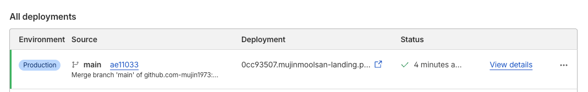
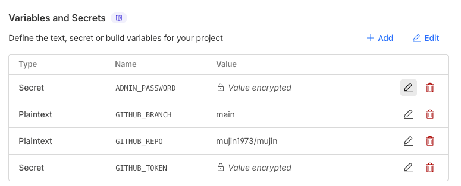
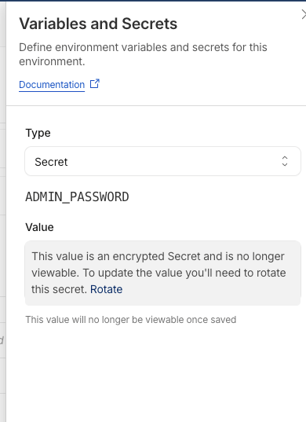

어드민 사용 매뉴얼
무진물산 랜딩페이지(mujin.im) 콘텐츠를 수정하고 배포하는 방법을 안내합니다.
저장 및 배포 흐름
어드민에서 내용을 수정한 뒤에는 반드시 저장 버튼을 눌러야 랜딩페이지에 반영됩니다. 미리보기에 적용했더라도 저장을 누르지 않으면 실제 사이트에는 아무런 변화가 없습니다.
배포가 완료됐는지 확인하려면 상단의 배포 진행상황 버튼을 클릭하세요. Cloudflare Pages 대시보드가 열리며, 가장 최근 배포의 상태가 Success로 바뀌면 반영이 완료된 것입니다.

메타 / SEO 카드
검색엔진(구글, 네이버)과 SNS 공유 시 노출되는 정보를 관리합니다. 사이트 방문자 수와 첫인상에 직접 영향을 미치므로, 회사명·주요 사업이 바뀌거나 대표 이미지를 교체할 때 반드시 함께 수정해 주세요.
- 회사명, 주요 사업, 연락처 등 핵심 정보가 변경될 때
- 검색 노출을 개선하고 싶을 때 (타이틀·설명·키워드 최적화)
- SNS/카카오톡에서 링크 공유 시 나오는 이미지나 제목을 바꾸고 싶을 때
- 대표 이미지(OG 이미지)를 시즌에 맞게 교체할 때
콘텐츠 카드 (기업소개 ~ 푸터)
랜딩페이지의 각 섹션 내용을 수정하는 카드들입니다. 수정한 항목은 미리보기에서 먼저 확인한 뒤 저장하세요.
연락처 카드
전화번호, 이메일, 네이버 블로그 URL을 관리합니다. 연락처는 랜딩페이지 내 여러 곳에 공통으로 사용되므로, 이 카드 하나만 수정하면 페이지 전체에 일괄 반영됩니다.
스크립트 관리 카드
랜딩페이지의 <head> 또는 <body> 영역에 삽입되는 외부 스크립트를 직접 편집할 수 있습니다.
- Google Analytics, 네이버 애널리틱스 등 분석 도구 추적 코드를 추가·변경할 때
- Google Search Console, 네이버 서치어드바이저의 사이트 소유권 확인 코드를 삽입할 때
- 카카오톡 채널 상담 버튼, 채팅 위젯 등 외부 서비스 플러그인을 연동할 때
- 광고 픽셀(Meta, Kakao) 코드를 삽입하거나 업데이트할 때
SEO 파일 카드
robots.txt와 sitemap.xml 두 파일을 직접 편집합니다. 검색엔진이 사이트를 올바르게 수집(크롤링)하고 색인하는 데 필요한 파일들입니다.
- 구글서치콘솔 또는 네이버 서치어드바이저에 사이트를 처음 등록할 때
- 페이지 구조가 바뀌어 sitemap.xml의 URL 목록을 업데이트해야 할 때
- 특정 경로를 검색엔진에서 숨기거나 다시 허용할 때
배포 이력 관리
상단 배포 이력 버튼을 클릭하면 최근 5개의 저장 이력이 표시됩니다. 잘못 수정한 내용이 있을 경우 이전 버전으로 되돌릴 수 있습니다.
어드민 비밀번호 변경
어드민 로그인 비밀번호는 Cloudflare Pages 대시보드에서 변경합니다. 로그인 유지 기간은 7일이며, 7일이 지나면 다시 로그인해야 합니다.
Cloudflare Pages — mujin-admin 설정 ↗

